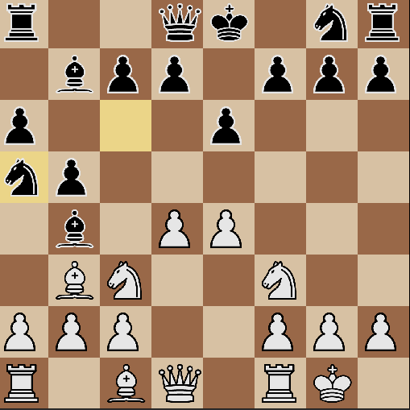
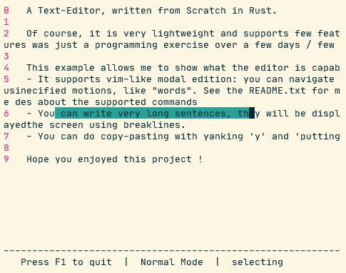
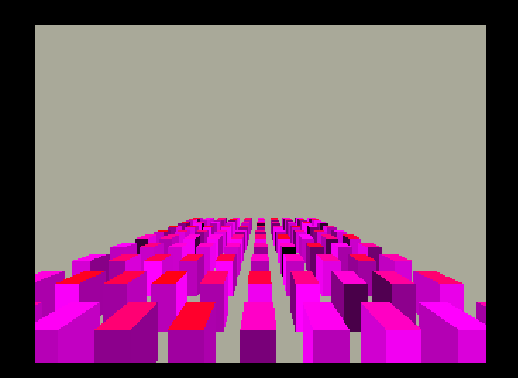
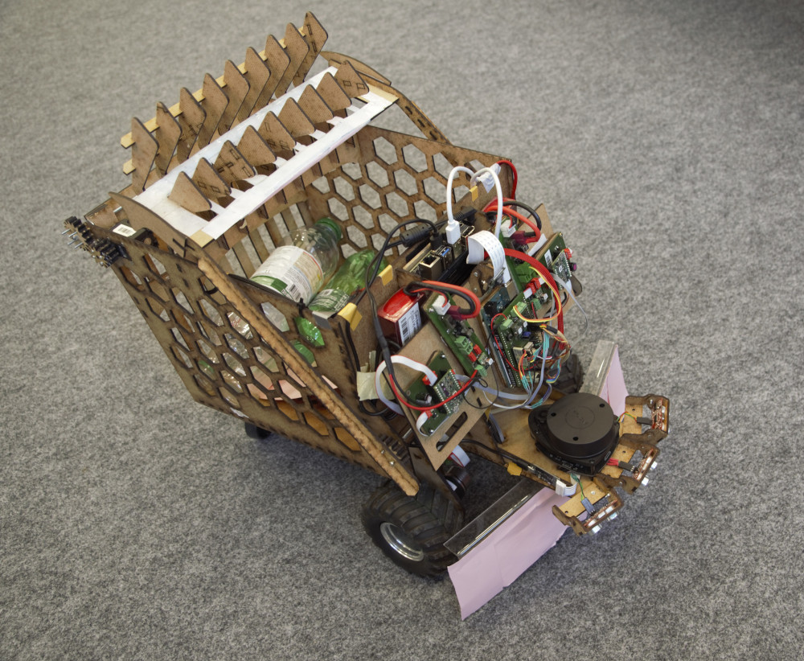
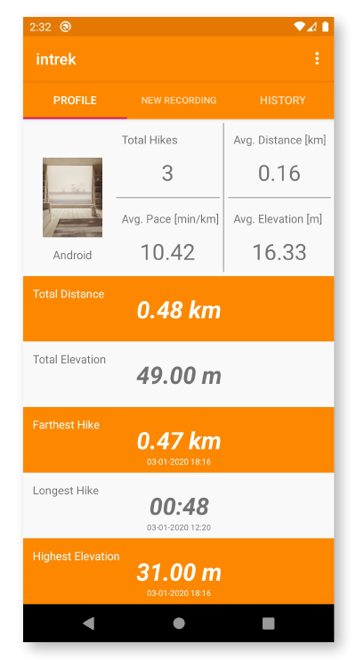
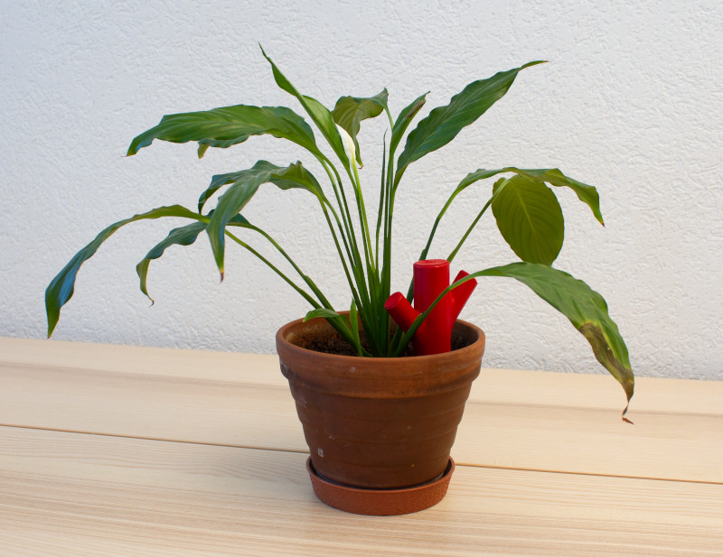
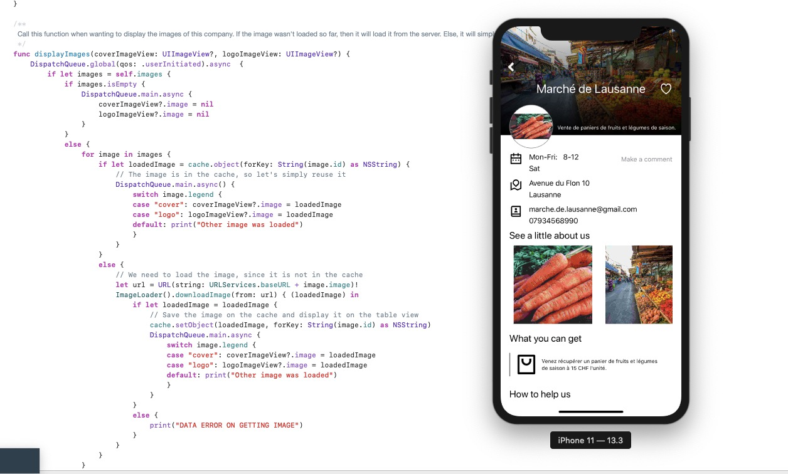
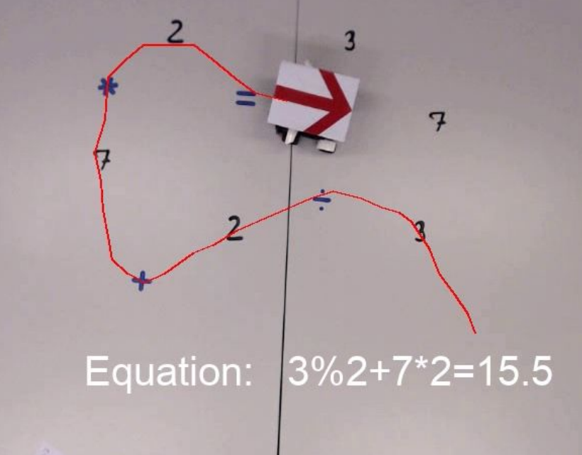
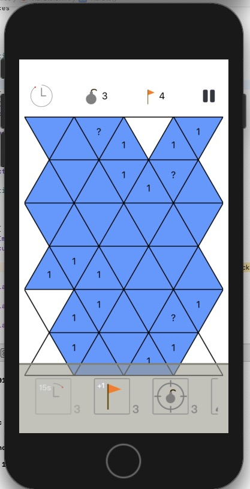
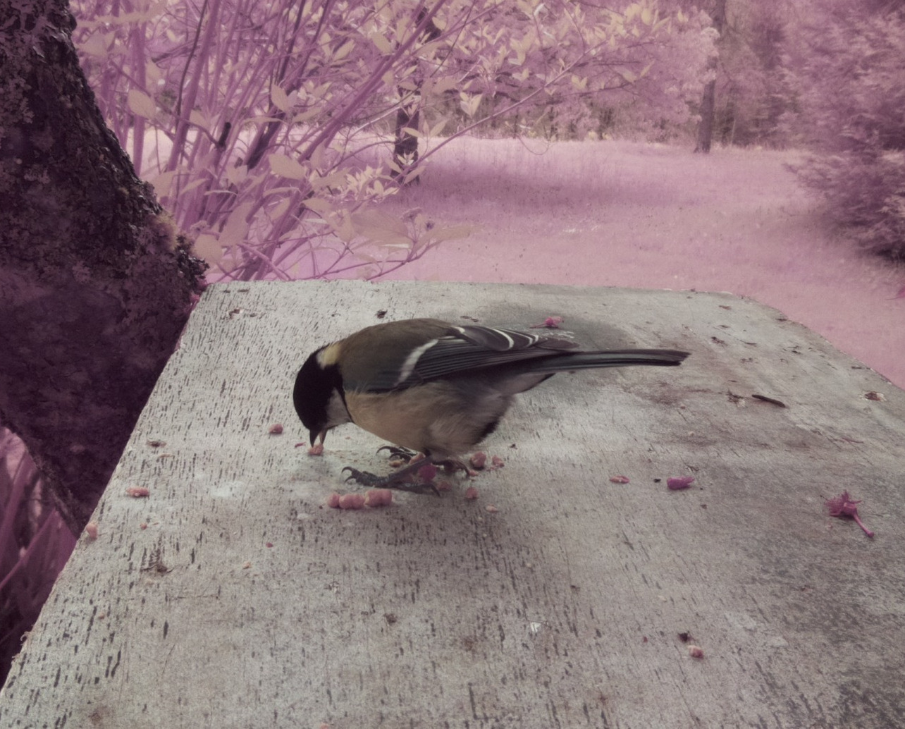

Personal Projects
Here, you'll find some of the projects that I have started, finished and that I have the right to publish.
[Chess, Rust]
Link to Github
A fully functional Chess Engine written completely from scratch in Rust
[Rust, Text, Challenge]
Link to Github
I was looking for a challenging project that would at the same time ask for some software design challenges, and for optimal coding in Rust. Writing a vim-like text editor turned out to be the perfect projet.
[Computer Graphics, Rust, Vision, Game Engine]
Link to Github
A 3D world renderer written from scratch in Rust, without any vision library such as OpenGL or Vulkan. To be able to render thousands of polygons efficiently on the CPU, I implemented binary space partitioning.
[Python, C++, ROS, Computer Vision, Deep Neural Network, Lidar]
Link to Github
Robottle is an autonomous robot able to collect plastic bottles in a random environment. It was entirely done in a team of 3 students. This project was showcased by NVIDEA as proof of concept for what a Jetson Nano Board can do !
[Java, Android, Mobile App]
As you may have understood it, I like hiking. This is an Android App to track your recordings using GPS data and connected devices, then save them using Google's Cloud services.
[Python, RPi, Arduino, IoT, PCB, Design]
Link to Github
China Hardware Innovation Center, 1 year and a half long project in a team of 5 students from 3 different schools, to design and create a connected object.
[Chess, C++]
Link to Github
A fully functional Chess Engine written completely from scratch in C++
[Python, Pandas]
Link to Github
Data Science Project, rewarded as in the 'best 10 course projects' (out of 138 projects).
[Swift, Python, Django, iOS]
Link to Github
During a 3 days hackhathon, we developed a mobile app to help local stores gain visibility.
[Python, Computer Vision, Deep Neural Network]
Link to Github
In this project, I had to analyse a video of a robot moving on top of numbers and operators to deduce an equation. I succedeed the project and its additional challenge and scored the best possible grade.
[Python]
Link to Github
A fully functional yet minimal gauss newton solver
[Swift, iOS, Mobile App]
Link to Github
This project is a mobile game that I did with my brother when we were younger. Though it may not be the most professional recommendation, I had learned a lot while working on this enormous remake of the very famous Mine Sweeper.
[Python, Computer Vision, RPi]
I love animals but it's difficult to take good pictures of them. So with my friend, we worked one weekend to design an animal trap
[Js, React, Gatsby]
Link to Github
My old personal website